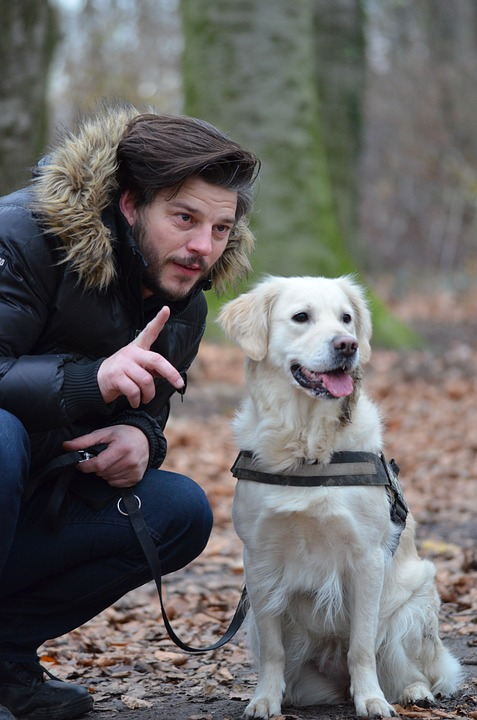

Jane Lindsay
CEO, Founder and Head Vet
Jane founded PAWS and has had many years experience as a head vet at VetSouth Winton. She attended Massey University and has a Bachelor of Vetinary Science with honours. Jane has a down to earth nature and enjoys spending time with her young family outside of working at the shelter.
jane.lindsay@paws.co.nz

Mike Brown
Animal Welfare Manager
Mike completed his Bachelor of Vetinary Science at Massey in 2014 before coming to Gore. Mark has a passion for animals and has also completed a Bachelor of Applied Science (Animal Management and Welfare). He is a very particular and thorough man who is very good at what he does.
mike.brown@paws.co.nz

Sarah Mcleod
Accounts Manager and Vet Assistant